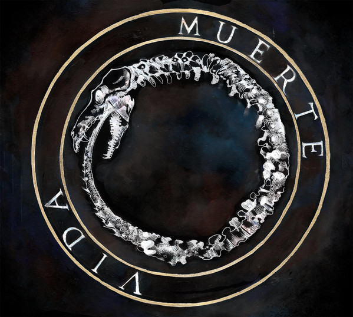

ALBUMS NUEVOS Y TENDENCIAS
Primer sencillo de su álbum como solista, titulado "SERIO".
Dirección: Nelson G. Navarrete.
Miami, FL.
"NEØN" Escrito e interpretado por Marlon Morales.
Grabado en Caracas, Venezuela.
Mezclado y Masterizado por Andrés Manzanilla en Royal Beagle Studios, Los Ángeles, California.
ALBUMS DE LIL SUPA
| Nombre del album | Duracion | Nº Total de canciones | Año de lanzamiento | Escrita por |
|---|---|---|---|---|
| Supremacy | 45:35 min | 16 | 2011 | Marlon Morales |
| Serio | 44:06 min | 13 | 2017 | Marlon Morales |
| NEØN | 25:23 min | 7 | 2020 | Marlon Morales |
| Funky Fresco | 29:49 min | 10 | 2020 | Marlon Morales & Pedro Elias |

Muerte es el segundo y último álbum de estudio como solista del fallecido compositor y exponente de rap, Canserbero.
Es considerado uno de los álbumes más importantes en la historia del género rap en español.
Grabado en 2011-2012 en Estudio El Techo.

Vida es un álbum de estudio interpretado y compuesto en su totalidad por el rapero venezolano Canserbero.
En este álbum Canserbero se enfocó en el Rap Conciencia.
El álbum en 2011 ganó un premio Distorxion a mejor disco de Rap.
ALBUMS DE CANSERBERO
| Nombre del album | Duracion | Nº Total de canciones | Año de lanzamiento | Escrita por |
|---|---|---|---|---|
| Guía Para la Acción | 63 min | 16 | 2008 | Tirone José González |
| Vida | 68 min | 17 | 2010 | Tirone José González |
| Muerte | 71 min | 14 | 2012 | Tirone José González |
| Apa y Can | 61 min | 13 | 2013 | Tirone José González & Larry Porfirio Rada |
OTROS GUSTOS MUSICALES Y SUGERENCIAS
Canciones:
- Mi Deseo
- Las Vegas Strip
Canciones:
- PARA LA FOREVER
- GATXS
- VIBRA ALTA
- NO ATERRIZÓ
- NOBOKIE
- MVSICX
Canciones:
- Convicto de Musa
- Cuántos?
- Crisis de Amor
- Auténticos
- Etapa Difícil
- En mi Nación
- Ocasiones
- Con que Fin?
- Un dia de tu Tiempo
- Que me Hace Falta?
- Igual a Ninguno